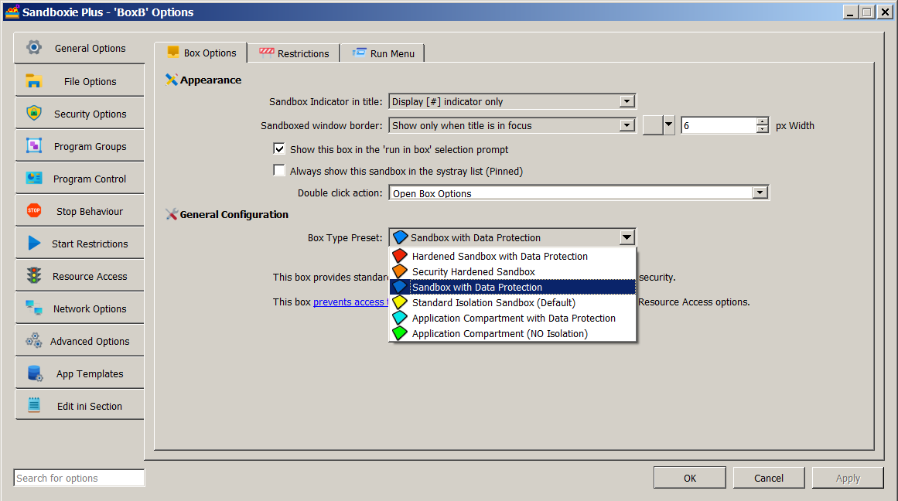

Privacy Mode
NOTE: This feature requires a supporter certificate.
The concept of privacy mode and privacy enhanced (or Data Protection) boxes was introduced in Sandboxie Plus v1.0.0. In this mode, most of the locations on a PC are set to be treated like a Write[File/Key]Path, which means the sandboxed locations are writable, but the unsandboxed locations are not readable. In addition, the registry does not allow reading of user root keys. In other words, even though sandboxed processes can continue to work, they cannot access private user data.
The setting for a privacy enhanced box can be enabled by adding UsePrivacyMode=y to the box settings section of Sandboxie.ini. It can also be enabled in the Sandman UI. Right-click on a box and select "Sandbox Options" from the drop-down menu (or simply double-click on a box) to bring up the Box Options UI. Select the Box Type Preset as "Sandbox with Data Protection" (with a blue box icon) and click OK to apply changes. The status column of Sandman UI labels this box as Privacy Enhanced.

What is User Space? AppGuard refers to user space as "computer storage space that is typically accessible by non-admin Windows users. It contains the user's profile directory (which includes the My Documents folder and Desktop), removable storage devices, network shares, and all non-system hard drives such as additional external and internal disk drives." Think of "user space" as everything outside the system (where the core operating system and programs live), in other words, outside the C:\Windows, C:\Program Files, and C:\Program Files (x86) folders!
Internally, a privacy enhanced box is based on three defaults:
1. Allow read access to system resources:
- C:\Windows
- C:\Program Files
- C:\Program Files (x86)
- Registry resources under HKLM (but not HKCU) are readable and can be sandboxed.
- Note: The read access provides a good balance between privacy and convenience. One could, of course, drill down to identify selected system resources that may leak private data and further restrict them (using Write[File/Key]Path) if desired.
- Hide (and block access to) user space:
-
In user space, a privacy box works in default block mode: all drive paths are set to WriteFilePath. This hides all files and folders outside the sandbox, but allows new files and folders to be created in the sandbox (unless specifically allowed by an overriding rule). Access to selected paths is enabled by invoking Rule Specificity.
-
Enable Rule Specificity:
- Internally, rule specificity is always enabled in privacy mode. It uses the Normal path directive (
Normal[File/Ipc/Key]Path) to open selected locations to be readable and sandboxed. Note that setting a path to normal is meaningful only when a parent path was first set to something else, as done in privacy mode. It is thus relevant not only for blue boxes (based on privacy mode) but also for red boxes (with both privacy mode and security mode enabled).
Recent Changes: Upon the introduction of privacy mode, a few built-in access rules were offered for some of the more common browsers and applications and these were augmented in later versions. Starting with Sandboxie Plus v1.8.0, all built-in access rules have been moved to a set of default templates (included in the file Templates.ini under the [TemplatePModPaths] section) for easier management.